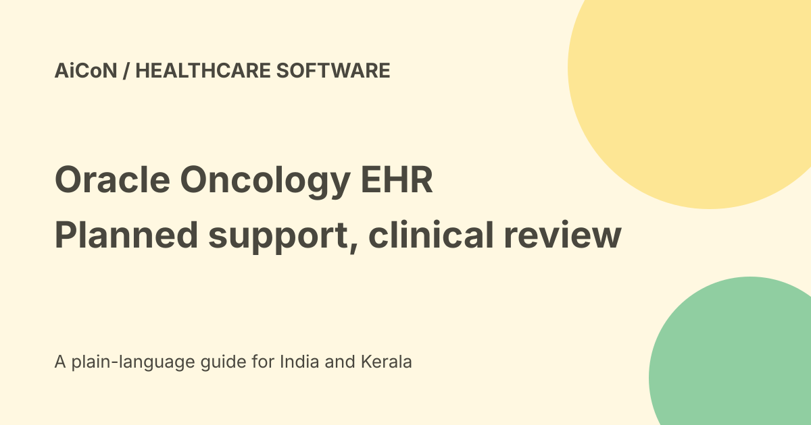

Oracle Oncology EHR: planned AI support, not a treatment tool
Oracle announced its Health Oncology EHR on 23 September 2026. The release describes expected AI assistance and planned cancer-care workflows built on its ambulatory EHR. It does not establish a general-availability date, an Indian hospital rollout or a consumer tool that chooses cancer treatment.

What an oncology EHR is
An electronic health record stores and connects patient information and clinical workflows. Oncology adds complex cancer-care needs such as treatment history, regimens, imaging, laboratory results and coordination across teams.
Software can help organise that information. It does not replace a qualified clinician's diagnosis, review or treatment responsibility.
A connected cancer-care timeline
Oracle lists a planned chronological view of cancer-related diagnoses and treatments. The goal is to make information easier to follow across care settings.
A timeline is only as reliable as its source records, patient identity matching and update process. Missing external treatment or incorrectly dated events can change the clinical picture.
Expected assistance for oncologists
The release describes patient snapshots and pre-visit summaries that show what has changed. It also describes support for Tumor Board preparation and guideline-grounded treatment planning.
A Tumor Board is a clinical discussion involving several specialists. A generated summary must preserve source dates, uncertainty and important exclusions; it is not an approved recommendation simply because it reads clearly.
Orders and documentation
Oracle describes carrying clinicians' decisions into orders, referrals, documentation and coding. That wording matters: the software is supporting a clinical workflow, not establishing permission for an unreviewed model to order treatment.
An institution should define who can accept, edit, sign and release each output. Review controls need to apply at the point the output affects care.
Nurse navigation and continuity
Planned connected worklists are intended to support coordination from diagnosis through treatment and survivorship. Teams may need to track referrals, follow-up and changed plans.
Test handoffs, ownership and overdue work. A task visible in a worklist is not proof another team received it or the patient completed it.
Precision oncology inputs
The release describes bringing together genomic, radiology, pathology, laboratory, pharmacy and social information. It says this forms a foundation for future pathway guidance, predictive analytics, trial matching and other capabilities.
Future capabilities should remain labelled future. Trial matching does not establish eligibility, acceptance or access, and predictive output does not establish a patient's outcome.
Regimen workflow plans
Oracle lists chemotherapy and immunotherapy ordering, lifetime cumulative-dose calculations, mobile ordering and response documentation among its planned functions.
Dose-related work is clinically consequential. A hospital must validate units, prior treatment, contraindications, medication data and approval steps against its actual clinical requirements before relying on it.
Questions for a hospital evaluator
- Ask which functions are available now and which are planned.
- Get a dated delivery schedule and exact product scope.
- Confirm licensing, implementation and migration costs.
- Test patient matching and source-data completeness.
- Evaluate summaries with representative clinical records.
- Check regimen rules and cumulative-dose calculations.
- Define clinician review, signatures and audit logs.
- Test access controls, downtime and recovery.
- Plan staff training and local clinical validation.
No hospital, patient record, demo account or treatment workflow was accessed for this guide.
Release status and disclaimer
The announcement uses expected and planned language. It gives no general-availability date for this oncology EHR. Ask for current contractual delivery and pricing details before relying on an announced plan.
Do not turn an announcement into a procurement commitment or claim a feature is already operating in a named hospital without separate evidence. Existing Oracle oncology offerings are not automatically the same new product.
Price, free access and India
No public consumer free tier, final enterprise quote or tax-inclusive INR price was established. Implementation, integrations, training, support and ongoing operations may be separate contract items.
The US event announcement does not confirm Indian deployment, local approvals or compatibility with an Indian hospital's current system. No Malayalam clinical performance or India-hosting arrangement was verified.
Patient and family boundaries
This guide explains a software announcement. It cannot tell you which cancer treatment to choose or whether a medicine is suitable.
Discuss care questions with the treating oncology team. Do not put identifiable medical records into an unapproved public AI service to imitate the proposed hospital workflow.
What changed since the original post?
We retain the planned status, separate the new announcement from existing products and explain the clinical validation, contract and India-access questions still open.
Frequently asked questions
Is general availability confirmed?
No date was established by the checked release.
Is this a free patient app?
No such access is established.
Can it replace an oncologist?
No. Clinical decisions remain with qualified care teams.
Sources: Oracle-issued oncology EHR announcement. Checked 7 October 2026.